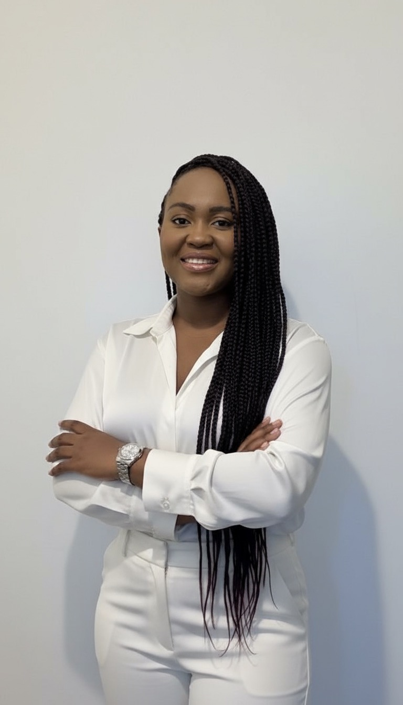
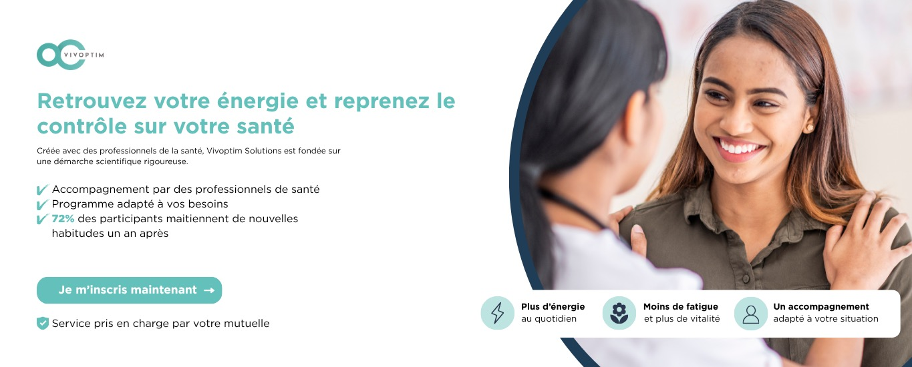
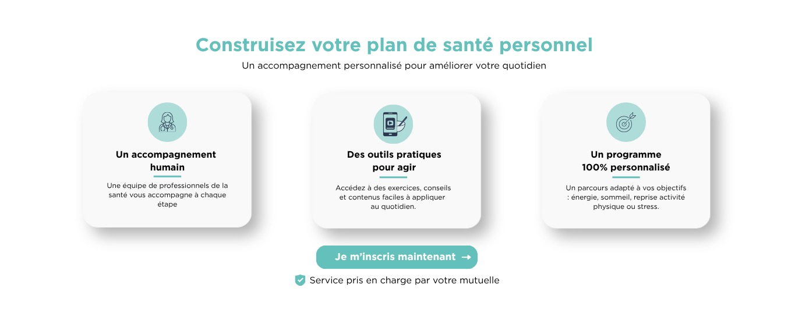
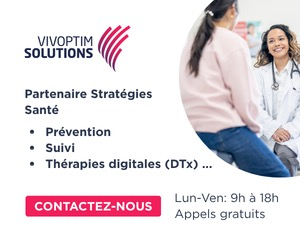

Écouter
Audit, analyse des audiences et des enjeux : comprendre la marque, sa parole et ses communautés.
Communication digitale, création de contenus, événementiel et relations médias : j'élabore des stratégies qui fédèrent les audiences et donnent à la marque une voix qu'on reconnaît.

Plan annuel, messages clés, articulation des canaux : un cap lisible pour la marque et pour les équipes qui la font vivre.
Positionnement de la parole, planning éditorial, pilotage multicanal : du concept à l'animation quotidienne.
Animation, modération, engagement : construire et fidéliser une audience autour d'une marque ou d'une cause.
Articles, vidéos, visuels, capsules — de la scénarisation au montage sur Premiere Pro, en interne et sur le terrain.
Coordination, couverture live, relations presse, partenariats : créer des moments fédérateurs et les faire savoir.
Copywriting, récits incarnés, cohérence du discours d'un support à l'autre — de la bannière à la page d'atterrissage.
Segmentation, automation, newsletters : garder le lien avec la communauté au-delà des réseaux.
Meta, Google Ads, display : donner de la portée aux contenus organiques quand l'enjeu de visibilité le justifie.
GA4, statistiques sociales, dashboards : savoir ce qui a porté, le dire simplement, et ajuster la stratégie.
GA4 · Google Tag Manager · Meta Business Suite · Google Ads · Salesforce · Mailchimp · Typeform · WordPress · Sitecore · SharePoint · Premiere Pro · Canva · Power BI · Excel
Audit, analyse des audiences et des enjeux : comprendre la marque, sa parole et ses communautés.
Plan de communication, ligne éditoriale, canaux : un cadre clair pour l'action quotidienne.
Création, publication, animation, couverture terrain : faire vivre la stratégie au jour le jour.
Mesure, insights, recommandations : apprendre de ce qui a porté et faire évoluer le dispositif.
Orphéopolis — construire une communauté engagée autour d'une cause
Orphéopolis, association reconnue d'utilité publique, accompagne les orphelins de la Police nationale. Mission sur 20 mois (nov. 2022 – juin 2024) : élaborer le plan de communication digitale, faire connaître la cause au-delà du cercle institutionnel et fédérer une communauté durable autour d'elle.
↳ Voir une capsule vidéo :
instagram.com/tv/CkxqkzarFtd
Dans l'associatif, la notoriété ne suffit pas : c'est le récit incarné et sincère qui crée l'attachement. Une communauté qui se reconnaît dans ce qu'elle lit finit par s'engager — et cet engagement, entretenu dans la durée, se traduit dans les résultats de l'association.
Salon du Fromage & des Produits Laitiers — une ligne éditoriale qui rassemble une filière
Entre deux éditions, un salon professionnel risque de disparaître du radar de sa communauté. Mission : maintenir la marque vivante sur Facebook et Instagram pendant l'inter-édition, puis amorcer la promotion de l'édition 2026 (Paris, Porte de Versailles) — sans aucun budget média.
Les contenus incarnés — artisans, terrain, humain — surperforment systématiquement les visuels génériques : les publications les plus vues de la période mettaient toutes des personnes en scène. Sans budget, c'est la justesse éditoriale qui fait la performance.
Salon Gourmet Sélection — piloter la communication d'un salon B2B, de la page au terrain
Salon B2B de référence de l'épicerie fine — 350 exposants, 4 500 visiteurs professionnels. Un salon s'adresse à deux publics à la fois : les visiteurs qu'il faut faire venir, et les exposants qu'il faut convaincre de réserver un stand. Mission : porter la communication de l'édition 2025 sur ces deux fronts, avec des objectifs chiffrés.
↳ La page est en ligne :
salon-gourmet-selection.com/…/landing-pmax
Communiquer pour un salon, c'est parler à deux publics qui n'ont ni le même langage ni la même valeur : 5,56 € pour faire venir un visiteur, 83,80 € pour intéresser un exposant. Tenir les deux discours en parallèle sans brouiller la marque, c'est le vrai exercice — et il se joue dans la cohérence entre la page, le message et le terrain.
Vivoptim Solutions — écrire une campagne santé qui rassure
Vivoptim Solutions propose un programme de santé personnalisé pris en charge par les mutuelles. Un sujet sensible, où la promesse doit rassurer sans promettre trop. Mission : concevoir et écrire les supports d'une campagne (display + emailing) pour transformer l'intérêt en inscriptions.
↳ Voir les supports produits :
canva.com/folder/FAHVbx73fR8



Sur un sujet santé, la cohérence du message d'un support à l'autre fait plus que le budget : quand la bannière, la page et le formulaire disent la même chose avec les mêmes mots, la personne n'a jamais l'impression d'avoir changé d'interlocuteur.
Je recherche un poste de chargée ou responsable de communication digitale, en CDI ou CDD, à partir de septembre 2026.
J'ai envie de mettre la stratégie de contenu, l'animation de communauté et le storytelling au service d'une marque à l'identité forte et aux vrais enjeux de visibilité.